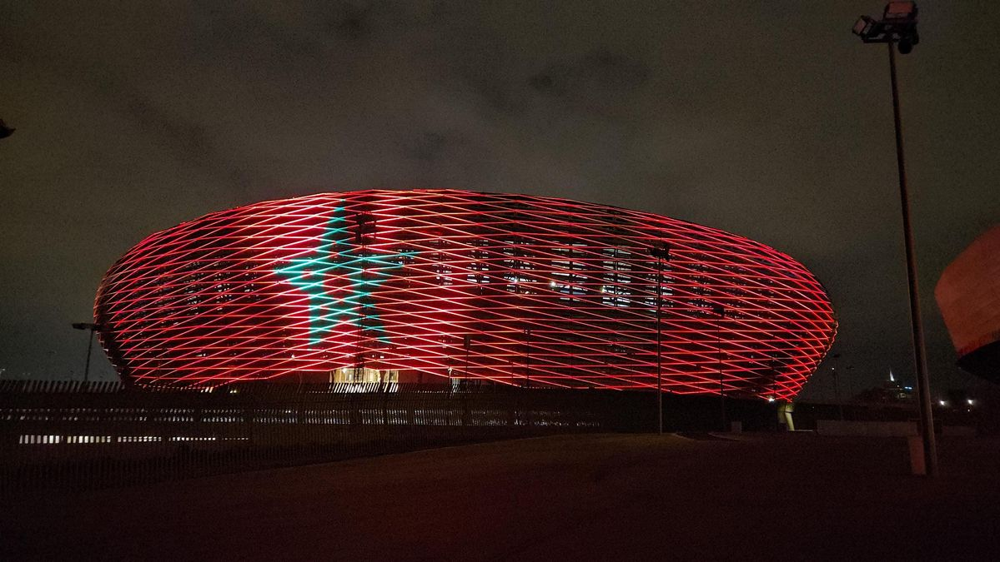

Stade de Rabat
Édition organisée au Maroc

Présentation et adresse
- Adresse : Avenue Prince Héritier Moulay El Hassan, Rabat, Maroc
🔹 Caractéristiques
- Ville : Rabat
- Capacité : environ 53 000 places
- Type : stade de football moderne
- Utilisation : matchs internationaux, compétitions africaines
🔹 Particularités
- Stade principal de la CAN 2025
- Accueille le match d’ouverture et la finale
- Situé dans la capitale du Maroc
- Équipé d’infrastructures modernes